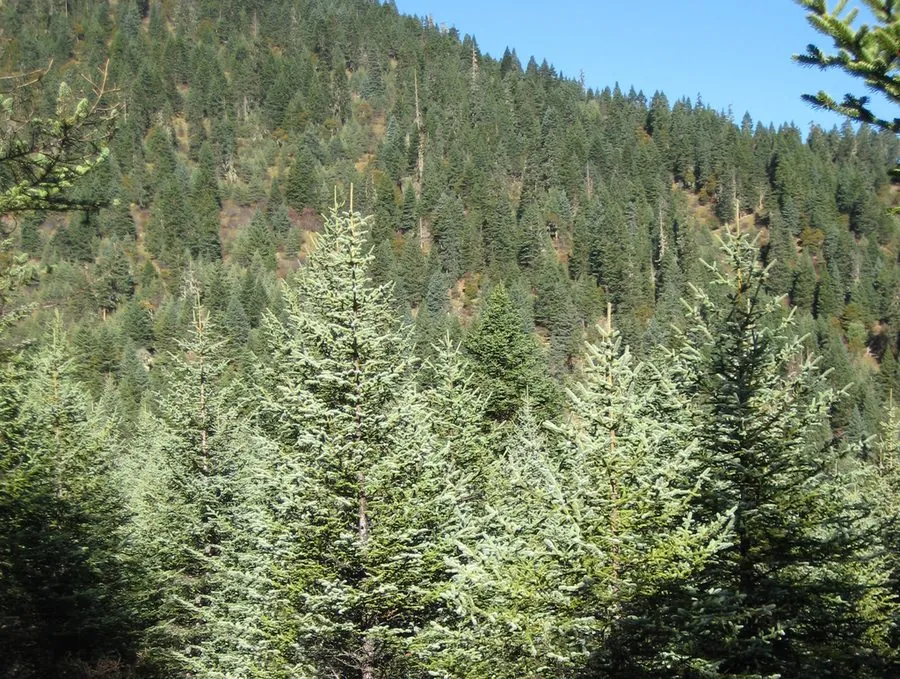

乔木 · 植物界
云杉 Picea asperata

中国西部高山的主要针叶树，树冠塔形、枝条轮生，针叶四棱状，是西南林区重要的用材与水源涵养树种。
- 分类
- 门裸子植物门纲松柏纲目松柏目科松科属云杉属
- 栖息环境
- 海拔 2000–3800 米的亚高山地带，喜冷凉湿润气候与酸性土壤
- 地理分布
- 中国四川、甘肃、陕西、青海等地，为中国特有树种
- 保护级别
- 暂无评估；中国未列入国家重点保护野生植物名录
物种志
云杉为常绿针叶乔木，高可达 45 m，树冠塔形，枝条轮生、平展，小枝上有明显叶枕；树皮灰褐色、呈薄片状剥落。针叶四棱状钻形，长 1–2 cm，螺旋状排列于小枝上，四面均有气孔线，呈灰绿色。雌雄同株，雄球花黄色、生于新枝基部，雌球花紫红色、生于枝顶；球果圆柱状，长 5–10 cm，成熟时褐色，种子具翅。
云杉分布于中国四川、甘肃、陕西、青海等地的中高山地带，是西南高山针叶林的主要组成树种，喜光、耐寒、喜湿润冷凉气候，适宜深厚肥沃的酸性灰化土，常与冷杉、桦木、高山栎混生。木材轻软、纹理直、共鸣性好，是建筑、造纸与乐器音板的优良用材；树皮可提取栲胶；云杉林在涵养水源与水土保持方面作用巨大，被称为高山的“绿色水库”。
形态与习性
- 株高可达 45 m，树冠塔形
- 针叶四棱状钻形，长 1–2 cm
- 花期4–5 月，雌球花紫红色
- 球果成熟9–10 月，圆柱状长 5–10 cm
- 光照喜光，幼树耐阴
- 水分喜湿润冷凉，忌干热
- 土壤酸性灰化土或山地棕壤
- 主要用途建筑与造纸用材、乐器音板、水源涵养
趣味知识
- 云杉的针叶呈四棱状，四面都有气孔线，横切面近似菱形。
- 云杉木材共鸣性好，是制作钢琴音板、吉他面板的优良材料。
- 云杉林是长江、黄河上游重要的水源涵养林，被称为“绿色水库”。
- 云杉枝条轮生、树冠塔形，是西南高山针叶林中最容易辨认的树种之一。